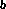
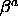
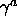
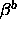
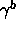
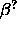
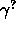
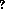

Since the trainable weights of an ARTMAP network are primarily the
ones of the two ART1 networks ART and ART
and ART

, it is easy to explain the ARTMAP initialization function ARTMAP_Weights. To use this function you have to select ARTMAP_Weights from the menu of the initialization functions. For ARTMAP_Weights you have to set the four parameters
,
,
and
. You can look up the meaning of each pair
,
in section
-part of the network.